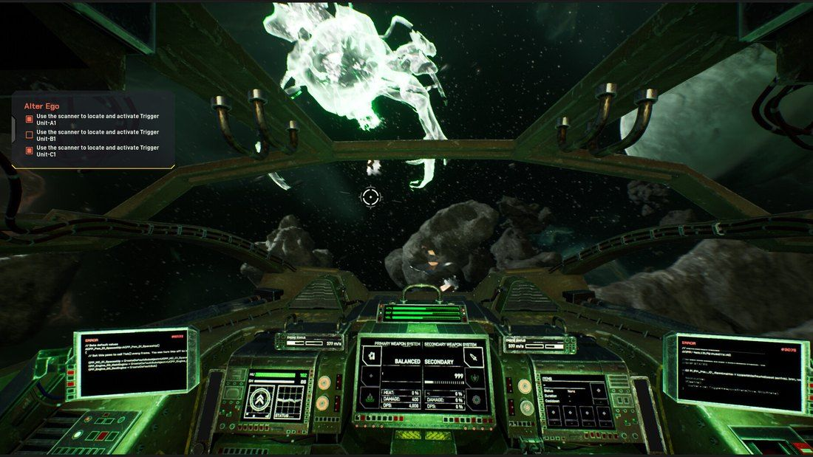
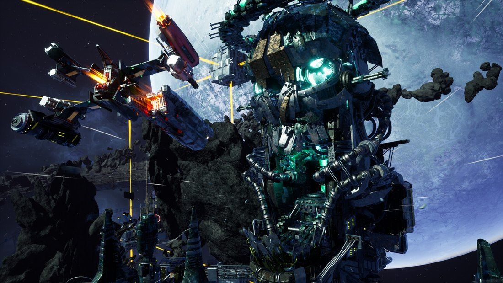

Dialogue · Ship part text
Hell Galaxy
Italian Games Factory · 2026
Nothing here is human. Not even you.
The player is a raider: an ex-convict stripped of his human body, whose consciousness is fused into a bio-ship and exiled for eternity in Neterun, a dangerous galaxy. The game blends weird fiction, dark sci-fi and transhumanism.
In space shooters you play as a ship. Hell Galaxy asks who is inside it: what is still human in a machine that remembers it was once human.
Dialogue
Homerus is the AI of the player’s ship. Over the opening of the game he goes from a tool built to assist to an accomplice. The protagonist has no voice: Homerus reacts to what the player does.
Setup
Homerus: Ship AI 40-126, name: Homerus.
Homerus: I’m going to scan your mind to ensure I can assist you in the best way possible.
Refusal of the call
Homerus: I think your parameterization is clearer to me now. You continue at all costs because you still want to escape, but this time from an entire galaxy.
Homerus: I was created to help my raider, but you want something that’s forbidden to any raider… I don’t know what to do…
Escalation
No lines. The player shows Homerus what he wants through his actions alone.
Climax and resolution
Homerus: There are stories of other raiders who tried to escape and became dust in the universe. They were not strong enough. And they didn’t have me.
Homerus: Now I know what to do. Helping you in the best way possible means showing you the way to the power.
Homerus: The power to escape this galaxy.
“In the best way possible” comes back, turned: helping now means leading the raider to the one thing forbidden to raiders.
How the story reaches the player
In a space shooter the player rarely stops to read, so the story travels through many channels. I wrote all of them as the sole writer. The highlighted one, the descriptions of the ship’s own parts, is shown below.
Ship part descriptions
…ed. We’ve bottled minds as messages, cast into a sea of stars. May that sea welcome my memories. · a broken record built into a ship part: it invites the player to find the other parts and complete it
The first, glorious K&B model. All raiders started with a gatling of this type, compact and easy to mount on their ship. “Freedom spree. K&B.” · a slogan that sells violence as freedom, to minds that have lost their bodies
An evolution of the RaidGun, created by Isaac Greyling Foundry using low-grade orichalcum. Some claimed it interfered with brainwaves. Greyling called it jealousy. · a rivalry in a few words
Sharp like a Mhafek’s pain.
· two parts of a set: each line ties a forgotten story to what the part does, sharp for a cockpit fitted with blades, brutal for a heavy gatling. With characters and side quests, these clues let the player piece the story together
Brutal like the Mhafek’s memories.

